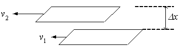
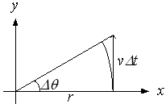

広告
剪断速度
剪断速度を直線運動から導出します。

上図を用いて剪断速度g[1/s] は、次式で表されます。
\[
\begin{aligned}
\gamma&=\lim_{\Delta x\to0}\frac{v_2-v_1}{\Delta x}\\
&=\frac{dv}{dx}
\end{aligned}
\]
剪断速度は、距離に対する速度勾配なので、単位は次の様に解釈できます。
\[
\frac{\text{速度}[\mathrm{m/s}]}{\text{距離}[\mathrm{m}]}
=[\mathrm{1/s}]
\]
次に剪断速度を回転運動から導出してみます。この場合は角速度を用います。

面積の収支から
\[
\frac{1}{2}rv\Delta t
=
\frac{\Delta\theta}{2\pi}\pi r^2
\]
剪断速度g[1/s]は
\[
\begin{aligned}
\gamma&=\lim_{\Delta t\to0}\frac{\Delta\theta}{\Delta t}\\
&=\frac{v}{r}
\end{aligned}
\]
| prev | | | up | | | next |